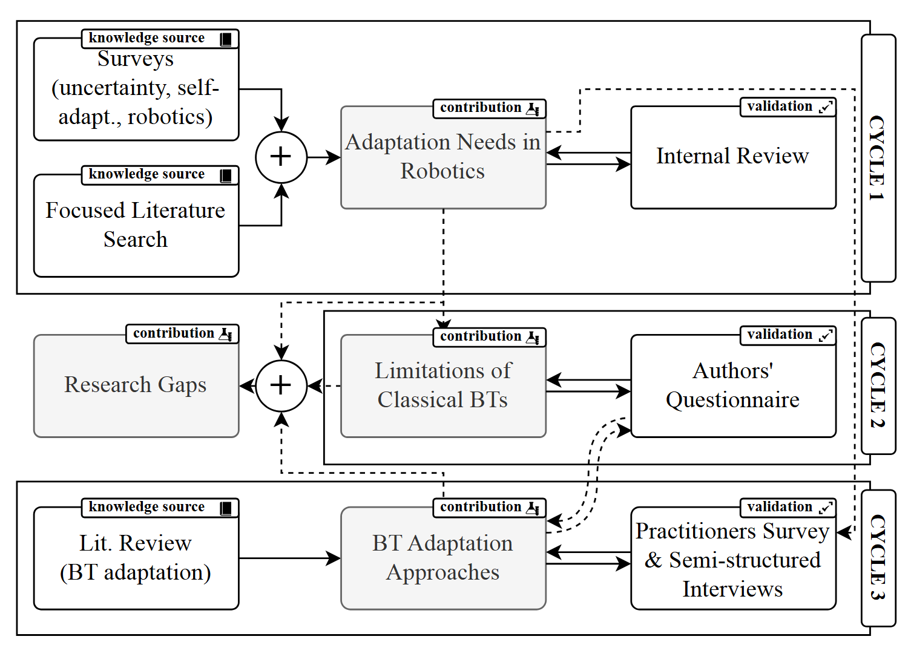

Adaptation needs
What adaptation needs characterize robotic systems?
Open research materials
A self-contained replication package connecting the study process to its search material, extraction workbooks, selected studies, questionnaire, author validation, and interview evidence.
Research frame
The analysis moves from why robotic systems need to adapt, through the limits of classical Behavior Trees, to the enhancements proposed in the literature.
What adaptation needs characterize robotic systems?
To what extent can classical BT features address these needs, and what limitations emerge?
To what extent do enhancement approaches overcome those limitations, and what new limitations remain?
Methodology and artifact map
The figure shows the three cycles. The table immediately below connects each phase and validation step to the files needed to inspect or reproduce it.

| Figure phase | Purpose | Deposited artifacts |
|---|---|---|
| Cycle 1 · RQ1 Knowledge sources → adaptation needs → internal review |
Ground and refine the classification of robotic adaptation needs. | RQ1 search strings · DOCX Definitions and extracted evidence · XLSX |
| Cycle 2 · RQ2 Classical BT limitations ↔ authors' questionnaire → research gaps |
Identify classical BT limitations, relate them to adaptation needs, and check the interpretation with study authors. | Limitations and mappings · XLSX 31 author-validation forms · HTML 13 anonymous responses · XLSX |
| Cycle 3 · RQ3 BT literature review → adaptation approaches ↔ survey and interviews |
Characterize BT generation, extension, evolution, and refinement, then triangulate practitioner judgments. | Technical synthesis · XLSX Selected-study index · Paper ID, title, DOI Interview summary · Markdown |
| Study output Integrated findings and research gaps |
Report the complete analysis and its resulting gaps. | Replication instructions · README Citation metadata · CFF |
Traceability index
Paper IDs, titles, and DOI or publisher records are kept together in one table.
| # | Paper ID | Title | DOI / record |
|---|---|---|---|
| Loading the selected-study index… | |||
Technical characteristics for these studies are available in the synthesis workbook.
Validation
The classification and mappings were examined using feedback from study authors, a broader questionnaire, and six semi-structured interviews.
All 31 customized forms are deposited. The received responses are stored together as anonymous records P1–P13.
Download responses · XLSXThe questionnaire, analyzed responses, and the 44-paper Scopus source list used to identify potential author invitees are included. The search covered papers published from 2024 through June 2026; contact email addresses are not released.
The released interview material is an anonymized summary of cross-cutting and technique-specific findings.
Read the interview summaryEach form records the paper-specific classification, extracted limitations, mapped adaptation needs, and validation questions.
Research team
The replication package was prepared by the paper's research team at GSSI.
Main contact
Research team
Research team
Research team